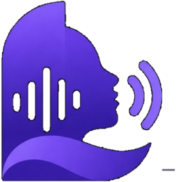
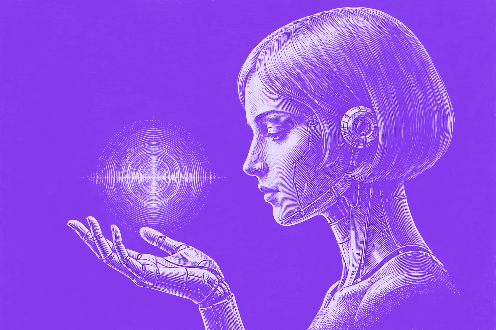

Kloning dari 10–15 detik
Beri satu rekaman WAV, MP3, atau m4a. Dikonversi sendiri lewat ffmpeg, lalu warna suaranya ditiru. Tanpa fine-tuning, tanpa unggah ke mana pun.

L.A.R.A.SLightweight Audio Recognition & Artificial Speech
Suara dari teks, ditiru dari 15 detik rekaman.
Mesin TTS berbahasa Indonesia yang berjalan di CPU biasa, tanpa GPU, tanpa API, tanpa unggah ke mana pun. Beri satu rekaman pendek, ia meniru warna suaranya dan membacakan teksmu, semuanya di mesinmu sendiri. Server v0.2.1 · Desktop v0.1.0 · satu binary, tanpa Python.

Ilustrasi · Wanita android rambut pendek, etsa duotone di atas ungu elektrik
Makin kecil makin akurat. Pita ungu itu rentang hasil ukurnya di kalimat uji.
Seberapa dekat suara hasil dengan rekaman rujukannya. Makin besar makin mirip.
Audio 22,7 detik selesai disintesis dalam 3,76 detik di 4 inti CPU.
Suara mulai terdengar 0,26 detik setelah permintaan, bukan menunggu 3,76 detik.
Batang di atas cuma menggambar ulang angka yang sudah tertulis di halaman ini. Bukan pengukuran langsung di perambanmu.
██╗ █████╗ ██████╗ █████╗ ███████╗
██║ ██╔══██╗██╔══██╗██╔══██╗██╔════╝
██║ ███████║██████╔╝███████║███████╗
██║ ██╔══██║██╔══██╗██╔══██║╚════██║
███████╗██║ ██║██║ ██║██║ ██║███████║
╚══════╝╚═╝ ╚═╝╚═╝ ╚═╝╚═╝ ╚═╝╚══════╝
░▒▓ TEXT-TO-SPEECH · BAHASA INDONESIA ▓▒░
Tanda tangan terminal · versi ASCII
Cara menjalankan
Semuanya gratis dan jalan lokal. Yang paling gampang sudah disorot ungu, sisanya tinggal pilih yang cocok buatmu.
Semua jalur memakai mesin yang sama: Rust + ONNX int8, tanpa GPU.
01 · Sampel suara
Tiga kalimat di bawah disintesis di mesin 4 vCPU. Referensinya sampel Common Voice berlisensi CC0, bukan rekaman pribadi siapa pun. Tekan putar, reel-nya ikut berputar. Kalau suaranya terdengar terlalu tenang, itu memang suaranya.
Sapaan biasa, kalimat sapaan sehari-hari, teks 96 karakter.
Pemilih ini cuma menyorot sampel yang sudah jadi di bawah. Halaman ini tidak mensintesis teks bebas langsung.
Ini suara asli dari paket resminya, berkas data/ref/suara.mp3, contoh Common Voice berlisensi CC0. Putar dulu suara aslinya, lalu putar hasil sintesisnya dan bandingkan.
tempo suara mengikuti tempo rekaman referensi. Referensi cepat menghasilkan suara cepat.
02 · Kenapa
Bukan sewa API. Ini enam hal yang membedakannya dari layanan TTS di awan.
Beri satu rekaman WAV, MP3, atau m4a. Dikonversi sendiri lewat ffmpeg, lalu warna suaranya ditiru. Tanpa fine-tuning, tanpa unggah ke mana pun.
ONNX Runtime dengan kuantisasi int8. Empat inti CPU cukup untuk 0,17× real-time: 22,7 detik audio selesai dalam 3,76 detik.
/tts/stream mengirim audio sambil menyintesis sisa teks. Byte pertama datang 0,26 detik setelah permintaan, bukan 3,76 detik.
Rute HTTP, normalisasi teks, pemotongan kalimat, dan inferensi semuanya di Rust. Image Docker-nya 180 MB, bukan 2 GB.
Token Bearer, batas laju per klien, antrean, timeout, dan batas ukuran body. Semuanya opt-in lewat env, jadi di localhost tidak perlu diutak-atik.
Artikulasi gugus konsonan masih lemah karena kosakata tokenizer 4.000 kata. Itu ditulis di README, bukan disembunyikan di catatan kaki.
03 · Sebelum & sesudah
Model dasarnya polos. Tiga perilaku di bawah ini ada di README, dan lapisan di mesin inilah yang mengatasinya. Ini cuma ilustrasi, bukan pengukuran baru.
15
dibaca satu lima
. Rp 12.500
dibaca apa adanya, digit demi digit.
15
menjadi lima belas
. Rp 12.500
menjadi dua belas ribu lima ratus rupiah
.
Teks panjang berhenti di sekitar 16 detik. Sisa kalimatnya hilang begitu saja.
Teks dipotong di titik, tiap kalimat disintesis sendiri, lalu hasilnya disambung jadi satu.
Rujukan yang dibaca cepat menghasilkan suara yang cepat. Rujukan yang dibaca lambat menghasilkan suara yang lambat.
Tempo hasil meniru tempo rujukannya, bukan diatur lewat parameter. Mau hasil lebih pelan, pakai rujukan yang lebih pelan.
04 · Unduh
Satu paket, langsung jalan: aplikasi, mesinnya, bobot model, dan satu contoh suara referensi CC0. Setelah diunduh, tidak ada permintaan jaringan sama sekali.
Zip berisi aplikasi + model. Ekstrak, dobel-klik, langsung bisa mengetik dan mendengar, tanpa terminal, tanpa server, tanpa GPU.
Unduh paket WindowsDirectML.dll dari laras-desktop.exe.laras-desktop.exe.Tarball berisi aplikasi + model, sama seperti paket Windows. Ekstrak, jalankan ./laras-desktop, langsung bisa mengetik dan mendengar.
Unduh tarball LinuxTarball berisi satu folder Laras dengan aplikasi di dalamnya; model dan suara referensi sudah terbungkus di dalam aplikasi. Ekstrak, buka Laras.app, langsung bisa mengetik dan mendengar.
Mac Intel belum didukung, karena pustaka ONNX Runtime tidak menyediakan paket untuknya. Butuh macOS 13.4 atau lebih baru.
05 · Pasang
Pilih satu. Model diunduh sekali.
# unduh model + referensi CC0 (sekali, ±160 MB)
git clone https://github.com/Urdemonlord/laras-tts \
&& cd laras-tts
./scripts/unduh-model.sh
# samakan nama referensi dengan yang dipakai landing & desktop
cp data/ref/common_voice_id_19961910.mp3 data/ref/suara.mp3
# jalankan
docker run --rm -p 127.0.0.1:8080:8080 \
-v "$PWD/data:/data" \
ghcr.io/urdemonlord/laras-tts:0.2.1
# sintesis
curl -s -X POST localhost:8080/tts \
-H 'content-type: application/json' \
-d '{"text":"Halo, apa kabar?"}' -o halo.wav
# butuh Rust ≥ 1.92 dan cmake cargo build --release --features onnx # samakan nama referensi dengan yang dipakai landing & desktop cp data/ref/common_voice_id_19961910.mp3 data/ref/suara.mp3 MODELS_DIR=data/models \ REF_WAV=data/ref/suara.mp3 \ ./target/release/laras
06 · API
Semuanya JSON masuk dan audio keluar.
| Rute | Guna | Catatan |
|---|---|---|
POST /tts | Sintesis satu teks jadi WAV 24 kHz mono | Header x-cache, x-duration, x-wer |
POST /tts/stream | Sintesis bertahap per kalimat | ?fmt=pcm untuk audio/L16 mentah |
GET /normalize | Lihat hasil normalisasi teks | Angka, mata uang, singkatan |
GET /health | Status mesin dan versi | Bebas token, untuk healthcheck |
Aplikasi desktopnya dibangun dengan Tauri: antarmuka webview sistem, mesinnya dipanggil langsung di dalam proses, tanpa port, tanpa server yang harus jalan dulu. Binary 32 MB + runtime ONNX 18 MB. Windows, Linux, dan macOS dibangun di CI dari satu kode. Paket macOS belum diuji di Mac asli.
Mesin aslinya membuka hasil normalisasi lewat rute GET /normalize. Kotak di bawah meniru aturan itu langsung di perambanmu, tanpa mengirim apa pun ke server: angka jadi kata, titik jadi pemisah ribuan, koma jadi desimal, Rp jadi rupiah, dan % jadi persen.
Hasil bacaan
Ini perkiraan lokal, demo di halaman ini saja, bukan mesin Rust aslinya, jadi hasilnya belum tentu sama persis. Bedanya paling terasa di singkatan dan angka di luar contoh.
07 · Batas
Ditulis apa adanya, seperti di README. Klik untuk membuka rinciannya.
Belum. “kloning” bisa terdengar “koning”, “kereta” jadi “kretah”. Ini batas kosakata tokenizer 4.000 kata, menambah langkah decoding atau mengeja ulang tidak menolong.
Bisa, tapi butuh GPU. Kosakata 8–16 ribu kata berarti latih ulang model, dan itu di luar jangkauan mesin 2 vCPU tanpa kartu grafis.
Tempo mengikuti referensi. Referensi cepat menghasilkan suara cepat, referensi lambat menghasilkan suara lambat.
Teks panjang dipecah per kalimat supaya sintesis tidak berhenti di sekitar 16 detik.